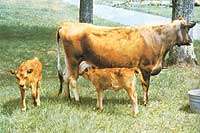
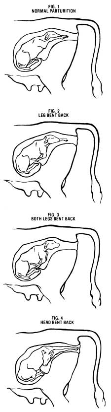
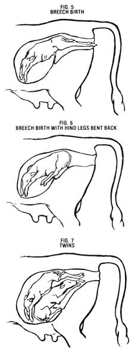

The cow's in labor . . . nothing's coming out . . . and you can't reach the vet. Now what?
One of the most exciting times in any homesteader's year is the day the animal babies come. Unfortunately, if something goes wrong and a creature is lost during parturition, one's elation quickly turns to sorrow. True, birthing mishaps are rare (in her infinite wisdom, Mother Nature very seldom slips up in such matters) . . . but they do occur. If you're a small-scale livestock breeder, then, you need to be informed about and prepared for the big event. That way, you'll know what's going on during parturition, so you can determine if and when your critter needs help.
Mind you, if you're an inexperienced birth attendant, any emergency assistance you offer should consist of one simple step: Call the vet! I do not recommend taking on unfaced obstetrical difficulties yourself unless you have to. Still, one day you just might be in a situation where you can't reach the vet . . . in which case the fate of the mother and baby may rest solely in your-and the good Lord's-hands.
Now I don't presume to be able to unfurl all the mysteries of birth to you in one article. But at least I can give you a basic idea of what to expect when things are going well in the "labor room" and what to do about them when they're not. For simplicity's sake, I'm only going to deal here with the common long-legged, hoofed beasts (cows, goats, sheep, and horses), since these animals generally deliver their young, singly or in pairs, in pretty much the same manner.
PREPPING
No matter how much you read about animal birthings, firsthand observation and experience are ultimately going to prove to be your best sources of information on the subject. For this reason, I recommend that-if you're new to livestock midwifery-you [1] get out and observe the births of some of your neighbors' animals, [2] make certain someone with lots of critter know-how is by your side during the first few birthing days of your own stock, and [3] alert your vet to the pregnant animal's due date, and have the doc's number always at hand in case you need help for the baby's debut.
As the critical time nears, you'll want to make up a large labor room with plenty of fresh bedding, clean water, and tempting feed for Mama. Naturally, creating such a space doesn't guarantee that the mother's going to use it (as the accompanying sidebar illustrates!), so you might want to pen her up a few days before she's due. This practice will provide the mother-to-be with a bit of luxury and will enable you to keep an eye on her, in the event that she gives birth early. Check on her several times a day, from an unobtrusive location (a hayloft or another stall) where you won't disturb her.
NORMAL PARTURITION
OK, you've done everything you can to prepare for the event, and suddenly Mama shows definite signs of approaching delivery: She acts irritable, loses her appetite, paces about with an air of anticipation, constantly looks back at her swollen belly . . . or all of the above. And, when you look closely at the area around her birth canal, you see that the muscles have become very relaxed and almost jellylike.
Yep, chances are good that Junior is on the way! What do you do now? At first . . . nothing . Just relax and let nature take its course. Remember, most births happen without a hitch. And if you're overanxious, Mama could get jittery too, which might create problems. So stay calm.
Once the mother's water has broken, you should see the first signs of life poking through the birth canal. If everything's going normally, the baby's front hooves will appear first, followed by its head . . . which will be tucked down between its knees (see Fig. 1). The youngster will seem to be div ing into the world.
Of the animals mentioned, the horse is the most efficient at delivering (with about a 95% success rate), usually producing its young within approximately 15 minutes after the water breaks. Because equines are so quick about parturition (and because they tend to give birth during the night, when it's quiet), it's fairly rare to observe a foaling. On the other hand, cows, goats, and sheep are a lot slower about delivering their offspring, usually taking an hour for the process . . . and sometimes as many as two. Be patient with such a "slow" Mama as she strains: As long as you can detect continuous progress (no matter how plodding), you can assume that all is well. Also, don't be too alarmed if the birthing mother is pretty nonchalant about the whole business. It's not uncommon for a mare or cow to lie down . . . start giving birth ... calmly stand up with Baby half in and half out . . . munch some hay . . . and finally (when good and ready) push junior on out the rest of the way!
Most times, the process will go smoothly. All that's left for you to do is to paint the baby's navel with a potent iodine solution, make sure the youngster gets a good dose of colostrum (the mother's first vitamin-rich milk) . . . and burn or otherwise dispose of the afterbirth. With horses, this is usually expelled within an hour after delivery. With other animals, it can take as long as 12 hours after parturition.
ABNORMAL PARTURITION
Your best barometer for determining if and when the mother animal needs help is time. Say you've got a mare that's been in hard labor for 20 minutes without producing any visible results. Well, you know that it should take her only around 15 minutes to produce a foal, right? Therefore, you can assume that you've probably got trouble on your hands. Likewise, a cow, goat, or sheep that's not beginning to deliver after an hour or so of straining may well need assistance. In no case should you leave an expectant animal in labor without help for more than three hours!
As I said before, your veterinarian is the preferred obstetrician in time of trouble. But if-for whatever reason-a doc isn't available, you're going to have to take charge. Just take a deep breath, stay calm, and move slowly and carefully: A nervous nurse only makes things worse. First, find an assistant to hold the struggling mother for you. Then scrub up (that includes hands and arms!), and also wash off the area around the animal's birth canal to insure that everything is as sanitary as possible.
Next, lubricate your hands and arms with mineral oil or petroleum jelly, and gradually slide an arm through the animal's vulva to feel about, so that you can estimate what you're dealing with. You may have to wait until the mother relaxes her contractions, but be patient: She will, and pretty soon you'll be in touch with the fetus. Now, you'll have to figure out what you've got hold of by visualizing what the youngster looks like as you feel it.
Of course, most of us can tell the difference between a head and a rump, but you're more likely to encounter a leg before you come upon a face or a tail. To find out whether you've found a front or a back hoof, slide your hand up the limb you've got hold of until you get to the two leg joints. If both joints bend in the same direction, you've got a front leg. If they bend in opposite directions, you've got a hind one. In either case, reach all the way up the leg and find its mate to ascertain that both are attached to the same animal: It could be twins, you know!
Many births are held up by a front leg that's bent backward (see Fig. 2). This situation is fairly simple to correct. Just flex the shoulder, elbow, and knee joints of the tardy leg and slowly rotate the limb until it's alongside Baby's head and aimed forward. Should both legs be tucked (as in Fig. 3), bring one forward in the described manner and then the other, making certain to tuck the head down between them in the diving position when you're done. [EDITOR'S NOTE: Some folks prefer to use a rope or obstetrical chain to reposition a slippery youngster in the womb. However, unless you really know what you're doing with these devices, you could wind up doing more damage than good. For instance, it's not uncommon to pull a hoof off with a badly placed, too-tight rope.]
Another possible difficulty is that the baby's head may be bent backward (see Fig. 4). Solving this problem can be fairly tricky, so be very careful. In order to bring the head forward, you may have to push the baby away from the birth canal and toward the front of the uterus. To do this, wait until the mother relaxes her contractions before gently pushing against the youngster's chest. Then carefully pull the head down and forward, finally securing it between the forelegs.
Besides "molding" the soon-to-be-born offspring into the diving position, you may actually have to help the exhausted mother give birth. If so, get a good grip on the baby and-following the mother's contractions-pull down when she strains and ease up when she relaxes. Notice that I said pull down . . . not out! (That's because the birth canal points in a downward direction.) Be patient, taking all your cues from the mother, no matter how slow she is. The baby has enough problems without your yanking it about unnecessarily.
BREECH BIRTHS
Breech births-backward entries into the world-are pretty common . . . and are also fairly dangerous if you don't know what to watch out for (see Figs. 5 and 6). The main problem with this back-feet-first delivery is that sometimes Baby doesn't get enough oxygen. Naturally, as long as the youngster's attached to an untangled umbilical cord, it'll be fine. And don't worry: Most of the time, the cord won't snap or snag until the new arrival is well onto the ground. However, since the animal's head comes out after practically everything else, its nostrils have more opportunity to get clogged with mucus and afterbirth. Therefore, what you do need to worry about is making sure that you clean of the newborn's face and nose as soon as you can. (You may also want to give the young' un a good breath-stimulating rubdown as an added precaution.) In a breech birth, make certain that Baby's hind legs are straight out behind it prior to delivery. If they're not, apply the same techniques you'd use with front legs to get them in a good womb-exiting position.
TWINS
I won't say much about double packages (see Fig. 7), because the problems involved are pretty much the same as those in solo births. Actually, since twins are generally smaller than singles, they're much easier to work with if you do need to intervene . . . but you should work on only one baby at a time.
FINISHING TOUCHES
The vast majority of times, of course, you'll "walk through" a birth-assist, and-almost before you know it-a lovely youngster will be looking up wonderingly at you. Don't forget to paint the newborn's navel with iodine, and see to it that the baby gets a big gulp of colostrum. Dispose of the afterbirth, too. [EDITOR'S NOTE: If a mare doesn't expel the afterbirth within six hours after delivery, you'd better call the vet. The same holds true if a cow, sheep, or goat hasn't gotten rid of it after 24 hours.]
After an abnormal parturition, the mother may be too worn out to tend to her little one, so you may have to clean the baby off-all over-for her. Afterward, give the new family a clean bed of straw or shavings to lie on, and provide a tempting laxative of bran and/or coarse hay for the mother.
Once you're sure they're comfortable and well taken care of, you can amble on back to the house for a nice cup of tea to calm your nerves, or you can do as I do: Settle down on a bale of hay and watch the first life exploring antics of the brand-new creature you've just helped bring into the world.
EDITOR'S NOTE: Here are some sources of general information on methods of livestock care that would-be animal midwives may find helpful: The Family Cow by Dirk van Loon (Garden Way, $8.95), Backyard Livestock by Steven Thomas (Countryman Press, $7.95), Raising Milk Goats the Modern Way by Jerry Belanger (Garden Way, $5.95), Raising Sheep the Modern Way by Paula Simmons (Garden Way, $7.95), and Raising Goats: The Backyard Dairy Alternative by David B. Weems (Tab, $12.95).
All of these books are available-for the listed price plus $1.25 shipping and handling for one or two books, $2.00 for three or more-from Mother's Bookshelf ; 105 Stoney Mountain Road, Hendersonville, North Carolina 28791.
|
 |
 |
 |